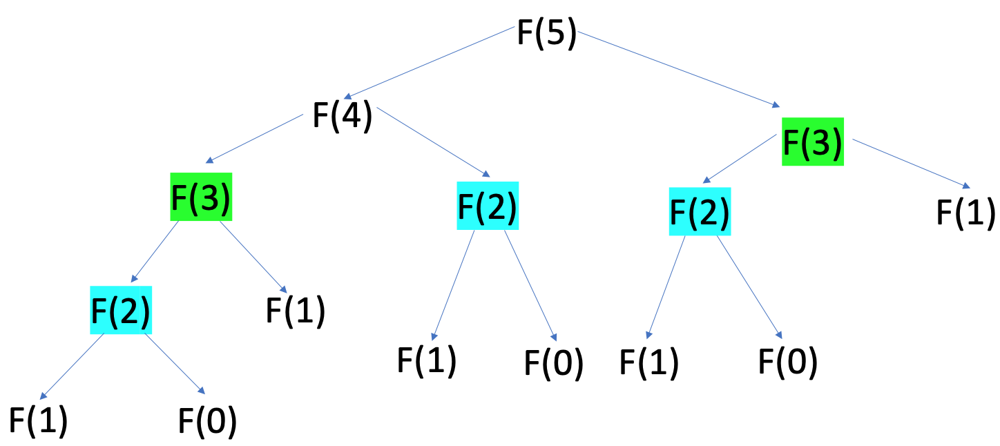
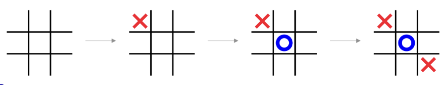
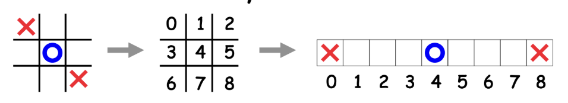
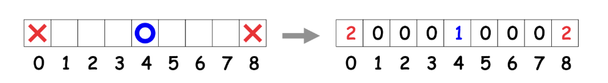
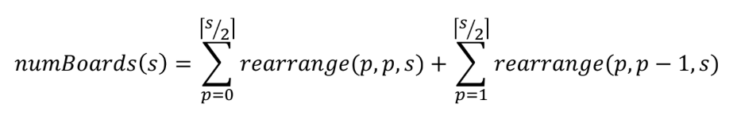
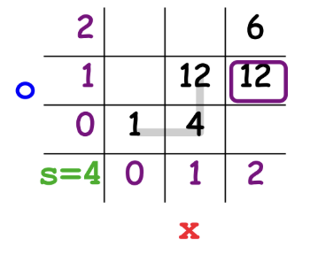

Hashing Positions
Solving a game means exploring an enormous game tree. This can be computationally expensive to compute every time we want to play the game, especially for bigger games. To avoid recomputing positions over and over, we need a way to name each position with a number so we can store and look it up quickly. That "naming function" is our hash function.
Big Idea: Memoization
Our solvers use memoization to be more efficient. This means that, once a position has been evaluated, we store its value instead of recomputing it. This is just like caching Fibonacci values instead of using recursion to find every value. We can illustrate this with a simple Fibonacci function. We can access previously computed values by storing Pairs (n, fib(n)) in a table.
int fib(int n) {
if (n == 0 || n == 1)
return n;
else if we've already computed fib(n):
return stored value;
else
int value = fib(n - 1) + fib(n - 2);
store(n, value);
return value;
}
For games, we can't use a simple number to store a position's value. We need to represent the entire board state, including whose turn it is, where the pieces are, and so on. How do we map this data into an integer that will serve as an index into our table? This mapping function is called a hash function.
What Is a Hash Function?
A hash function takes a piece of data (like a board) and returns an integer. We use that integer as an index into an array or as a key in a table.
For our solvers, a good hash function should:
- Map each reachable position to a unique integer
- Spread different positions out evenly across the table
- Be fast enough to compute on every recursive call
Writing a Tic-Tac-Toe Hash Function
Let's consider how we migh write a hash function for Tic-Tac-Toe. Here's how you play:
- One player chooses X, the other chooses O
- Two players take turns placing Xs and Os on a 3x3 grid
- Assume X goes first
- Once a piece is placed, it isn't moved
- The first player to get three in a row wins
- If the board fills up with no winner, it's a tie

How do we convert a Tic-Tac-Toe position into a unique integer? One idea is to treat turn the 2D board into a 1D array of 9 slots:

Each slot can be in one of three states: blank, O, or X. We can represent these as 3 numbers instead:
0for blank1for O2for X

Optimizing the Hash Function
If we understand the rules of the game, we can do better than just using all 3⁹ possible combinations. For Tic-Tac-Toe:
- Players alternate turns
- X always goes first
- You can never have more than one extra X than O on the board
This means many of the boards our hash function can encode are impossible in real play, like boards with 5 Os and 1 X.
We can count the number of legal boards using combinatorics. Let's say s is the number of slots. Let's start with one slot. X goes first, so the board can either have nothing or an X. This means there are two possible boards we should consider. What if there are two slots, which will call A and B? There could be nothing on the board, one move made by X (either in A or B), or one move made by X and one made by O (arranged like XO or OX).
- S=1: 2 board (- | x)
- S=2: 5 boards (-- | -X, X- | XO, OX)
- S=3: 13 boards (--- | --X, -X-, X-- | -OX, -XO, O-X, OX-, X-O, XO- | OXX, XOX, XXO) = (1 + 3 + 6 + 3)
Do you see the pattern now? For s=4, we had:
# ways to rearrange 0 Xs, 0 Os in 4 slots +
# ways to rearrange 1 Xs, 0 Os in 4 slots +
# ways to rearrange 1 Xs, 1 Os in 4 slots +
# ways to rearrange 2 Xs, 1 Os in 4 slots +
# ways to rearrange 2 Xs, 2 Os in 4 slots
Then the number of ways to rearrange p pieces in s slots is:

But what about the number of ways to rearrange x Xs and o Os in s slots? Here, we can use Pascal's triangle! This triangle helps us count the number of ways we can arrange a certain number of items in a certain number of spots. For example, if we want to arrange 2 pieces in 5 slots, this would be 5 choose 2. The formula for N choose K is as follows: N!/K! (N-K!). We can also just find N and K on our table to determine our value. For 5 choose 2, we get 10 ways.
cNow we are ready to calculate the number of ways we can rearrange x Xs and o Os in s slots?
Blur method
- First, blur eyes, how many ways to rearrange ALL (x+o) pieces in s slots? This gives us s choose x+o.
- For EACH, how many ways to rearrange Xs in pieces? This gives us x+o choose x.
- Calculate the product of the two to find our final answer!
Overcount method
- Think of permuting all the elements: how many are there? There are s!
- How many Xs, Os, and spaces were overcounted? This would be o!, x! and (s-x-o)!
- Calculate the product of the two to find our final answer!
Using this method, how many possible board arrangements are there? Previously, our hash covered 3^9 boards, which is 19683 boards. However, we actually only have 6046 boards! We calculate this by calculating 1+9+72+252+756+1260+1680+1260+630+126. Now, how do we find a hash function that takes the true number of arrangements into account?
Finding a New Hash Function
With what we know now, we can try to find a combinatorially optimal hash! When we calculated numboards, we see that it is actually a zig-zag pattern due to the alternating moves of each player.
We can use bias + rearrangement to find a combinatorially optimal hash:
- Bias (offset): Count how many numbers there were in the zigzag up to the box
-
Rearrangement: Same idea as the ternary polynomial hash code
- X counts for all ways to rearrange if it were O & –
- O counts for all ways to rearrange if it were –
- – counts for 0
Hashing a Small Tic-Tac-Toe Board
To keep things concrete, imagine that we are trying to hash XO-X. We know that this number has to be between 0 and the max numBoards for an arrangement of 4 pieces (34).

- Bias (offset): X=2, O=1, S=4; count buckets up to us: 1+4+12=17
-
Rearrangement #: [R(X,O,S)] = 3+3+2=8
- X3 = r(2,1,3) + r(2,0,3) = 3 + 3
- O2 = r(1,1,2) = 2
- –1 = 0
- X0 = 0
Practical Considerations
Combinatorially optimal hash functions are useful, but, for larger games where this might get too expensive, we often settle for simpler hashes that are "good enough." A good hash spreads out values and keeps collisions rare. We can also use symmetry to create more optimal hash functions. It can be difficult to write a good hash function, but try your best!
Summary
- Memoization saves time by remembering solved positions
- Hash functions turn complex positions into integers we can store
- Combinatorial hashing uses game rules to pack only legal boards into a smaller range
- Bias + rearrangement lets us assign unique indices to positions in a way that only encodes legal boards
Practice Questions
Test your understanding of hashing with the questions below. Click an answer to check it.